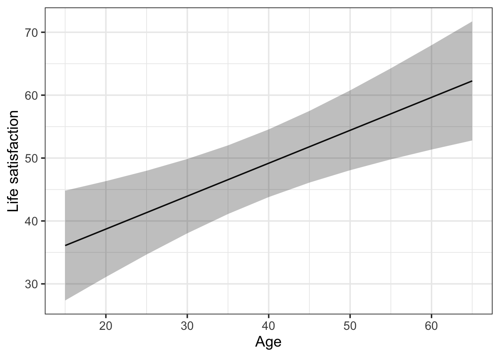
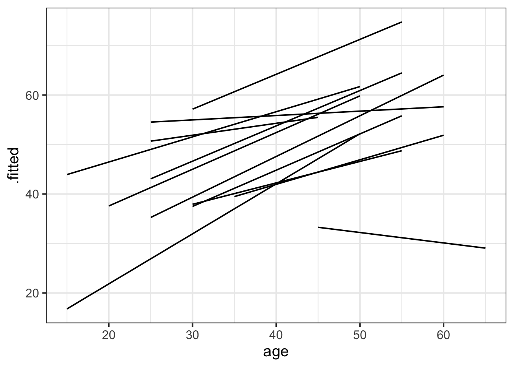
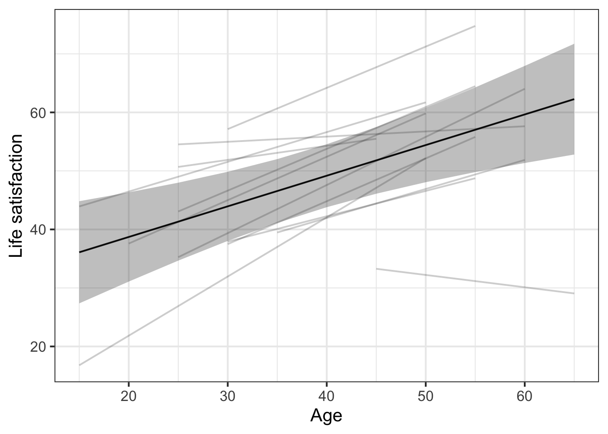
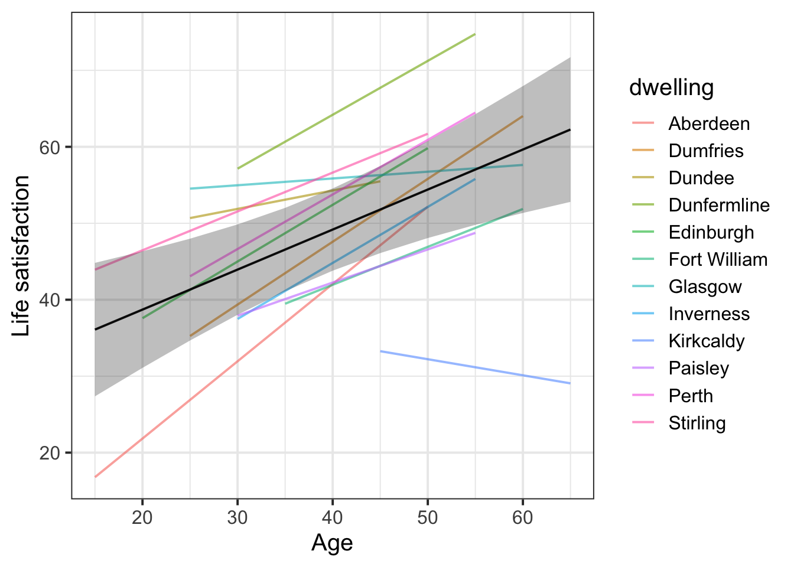
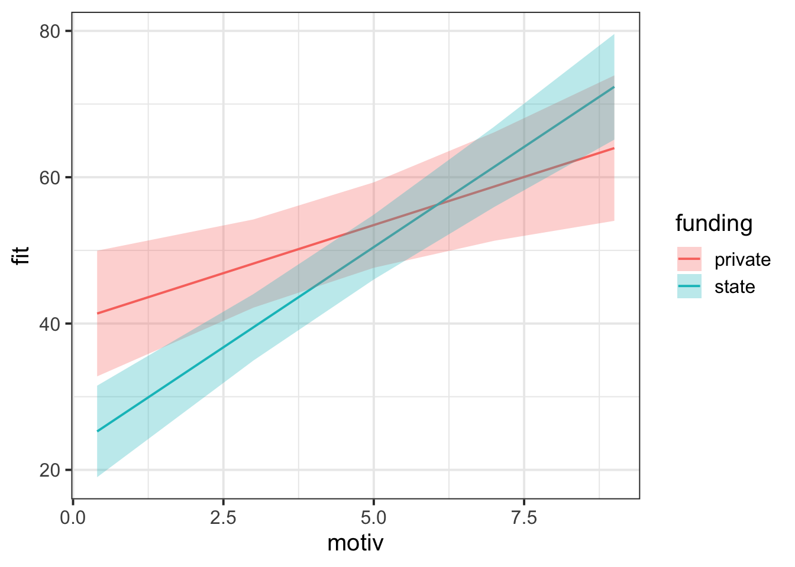
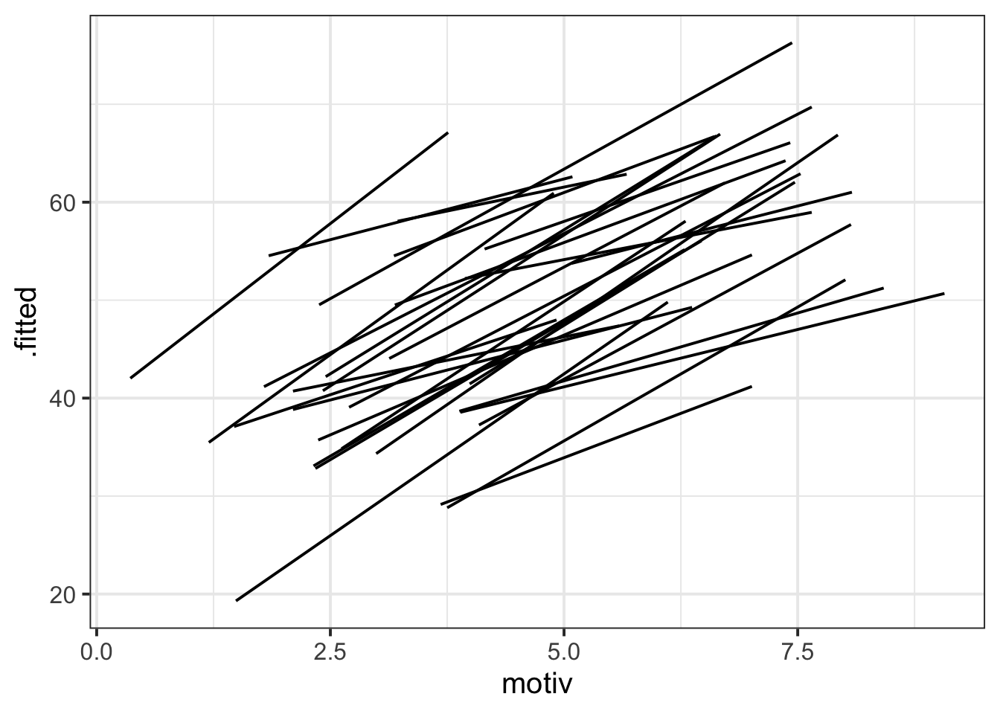
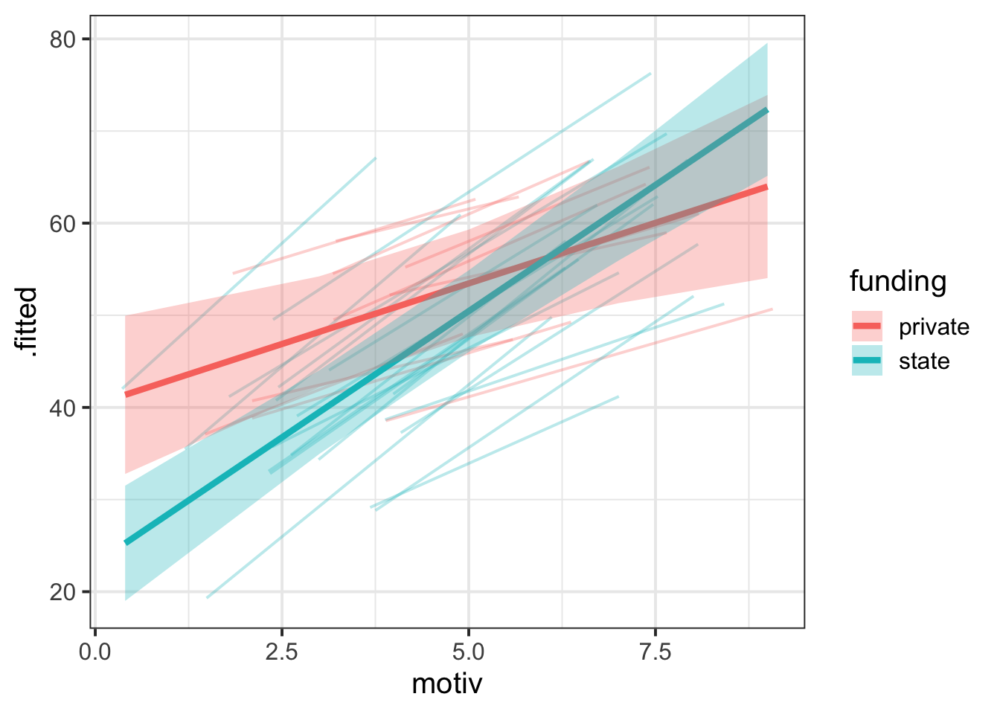

| variable | description |
|---|---|
| age | Age (years) |
| lifesat | Life Satisfaction score |
| dwelling | Dwelling (town/city in Scotland) |
| size | Size of Dwelling (> or <100k people) |
Plot model-fitted values
The plots shown on this page are good examples of what you might include in the Results section of a report or (mini)dissertation.
Example: Life satisfaction in Scotland
These data come from 112 people across 12 different Scottish dwellings (cities and towns). Information is captured on their ages and a measure of life satisfaction. The researchers are interested in if there is an association between age and life-satisfaction.
Data are available at https://uoepsy.github.io/data/lmm_lifesatscot.csv.
lifesatscot <- read_csv("https://uoepsy.github.io/data/lmm_lifesatscot.csv")Our model is the following (to see how we figured out this random effect structure, see Identify possible random effects).
lifesat_mod <- lmer(
lifesat ~ age + (1 + age | dwelling),
data = lifesatscot
)Step 1: Plot fixed effects
With the effects library, we get the function effect(). This function tells us the model-fitted outcome values (in column fit) for each value of age, along with the lower and upper bounds of the 95% CI around those fitted values.
library(effects)
effect(term = "age", mod = lifesat_mod) |>
as.data.frame() age fit se lower upper
1 20 38.7 3.85 31.1 46.3
2 30 43.9 2.98 38.0 49.9
3 40 49.2 2.71 43.8 54.6
4 50 54.4 3.20 48.1 60.8
5 60 59.6 4.19 51.4 67.9effect() by default gives five equally-spaced values across the range of the predictor, but to make effect() give us fitted values for the whole observed range of age, we define the values of age we want to see and then tell that to effects() using the xlevels= argument:
# Get fitted values every five years between the min age and max age
age_range <- seq(
min(lifesatscot$age),
max(lifesatscot$age),
5
)
effect(term = "age", mod = lifesat_mod, xlevels = list(age = age_range)) |>
as.data.frame() age fit se lower upper
1 15 36.1 4.40 27.4 44.8
2 20 38.7 3.85 31.1 46.3
3 25 41.3 3.36 34.7 48.0
4 30 43.9 2.98 38.0 49.9
5 35 46.6 2.75 41.1 52.0
6 40 49.2 2.71 43.8 54.6
7 45 51.8 2.87 46.1 57.5
8 50 54.4 3.20 48.1 60.8
9 55 57.0 3.65 49.8 64.3
10 60 59.6 4.19 51.4 67.9
11 65 62.3 4.78 52.8 71.7We can pipe this data into ggplot to visualise the model-fitted values as follows:
effect(term = "age", mod = lifesat_mod, xlevels = list(age = age_range)) |>
as.data.frame() |>
ggplot(aes(x = age, y = fit)) +
geom_line() +
geom_ribbon(aes(ymin = lower, ymax = upper), alpha = 0.3) +
labs(
y = 'Life satisfaction',
x = 'Age'
)
Step 2: Plot group-level lines
With the package broom.mixed, we get the function augment(). Think of this function as the group-level version of effects::effect(): it gives us model-fitted values (in the column .fitted) for each level of our grouping variable. We can pipe its output into ggplot and plot lines for each dwelling.
library(broom.mixed)
augment(lifesat_mod) |>
ggplot(aes(x = age, y = .fitted, group = dwelling)) +
geom_line()
Step 3: Combine fixed effects and group-level lines
This plot is a bit more complex, since it combines data coming from two different places: effects() and augment().
# Store the fitted estimates for the fixed effects
eff_df <- effect(term = "age", mod = lifesat_mod, xlevels = list(age = age_range)) |>
as.data.frame()
# Create the ggplot based on `augment()`
augment(lifesat_mod) |>
# Both augment() and eff_df have the same variable called `age` for the x axis,
# so we can define that x axis for the whole ggplot:
ggplot(aes(x = age)) +
# Create the group-level lines with the variable names specific to augment()
geom_line(aes(y = .fitted, group = dwelling), alpha = 0.2) +
# Drawing on data from eff_df, which has different column names,
# create the fixed effect line and 95% CI ribbon
geom_line(data = eff_df, aes(y = fit)) +
geom_ribbon(data = eff_df, aes(y = fit, ymin = lower, ymax = upper), alpha = 0.3) +
# Cosmetics: adjust axis labels
labs(
x = 'Age',
y = 'Life satisfaction'
)
CautionAdd colour by
dwelling
The only change is to rewrite group = dwelling as colour = dwelling in the first geom_line() call!
Caution: adding colour is only really useful if there are few enough levels of the grouping variable. If there are lots of levels, it’s hard for the reader to map different colours to different levels, so the colours would not add useful information.
# Store the fitted estimates for the fixed effects
eff_df <- effect(term = "age", mod = lifesat_mod, xlevels = list(age = age_range)) |>
as.data.frame()
# Create the ggplot based on `augment()`
augment(lifesat_mod) |>
# Both augment() and eff_df have the same variable called `age` for the x axis,
# so we can define that x axis for the whole ggplot:
ggplot(aes(x = age)) +
# Create the group-level lines, now colouring by dwelling!
geom_line(aes(y = .fitted, colour = dwelling), alpha = 0.6) + # <- THE ONLY CHANGE!
# Drawing on data from eff_df, which has different column names,
# create the fixed effect line and 95% CI ribbon
geom_line(data = eff_df, aes(y = fit)) +
geom_ribbon(data = eff_df, aes(y = fit, ymin = lower, ymax = upper), alpha = 0.3) +
# Cosmetics: adjust axis labels
labs(
x = 'Age',
y = 'Life satisfaction'
)
More complex example: School grades, motivation, and funding
This dataset contains information on 900 children from 30 different schools across Scotland. The data was collected as part of a study looking at whether education-related motivation is associated with school grades. This is expected to be different for state vs privately funded schools.
All children completed an ‘education motivation’ questionnaire, and their end-of-year grade average has been recorded.
Data are available at https://uoepsy.github.io/data/schoolmot.csv.
| variable | description |
|---|---|
| motiv | Child's Education Motivation Score (range 0 to 10) |
| funding | Funding ('state' or 'private') |
| schoolid | Name of School that the child attends |
| grade | Child's end-of-year grade average (0 to 100) |
schoolmot <- read_csv('https://uoepsy.github.io/data/schoolmot.csv')The maximal model will be the following:
grade_mod <- lmer(
grade ~ motiv * funding + (1 + motiv | schoolid),
data = schoolmot)We are predicting schoolchildren’s grades as a function of their motivation, their school’s funding, and the interaction between those two variables. We are also including by-school adjustments to the fixed intercept and to the fixed slope over motiv. (For the steps to identify random effect structures, see Identify possible random effects.)
Step 1: Plot fixed effects
Because we’ve got an interaction model, we include both interacting predictors in the term= argument of effect().
effect(term = "motiv * funding", mod = grade_mod) |>
as.data.frame() |>
ggplot(aes(x = motiv)) +
geom_line(aes(y = fit, colour = funding)) +
geom_ribbon(aes(y = fit, ymin = lower, ymax = upper, fill = funding), alpha = .3)
Step 2: Plot group-level lines
augment(grade_mod) |>
ggplot(aes(x = motiv, y = .fitted, group = schoolid)) +
geom_line()
Step 3: Combine and colour
eff_df <- effect(term = "motiv * funding", mod = grade_mod) |>
as.data.frame()
augment(grade_mod) |>
ggplot(aes(x = motiv)) +
geom_line(aes(y = .fitted, group = schoolid, colour = funding), alpha = 0.3) +
geom_line(data = eff_df, aes(y = fit, colour = funding), linewidth = 1.5) +
geom_ribbon(
data = eff_df,
aes(y = fit, ymin = lower, ymax = upper, fill = funding),
alpha = 0.3
)
Linked flash cards
Outgoing links
- TODO
Backlinks
- TODO